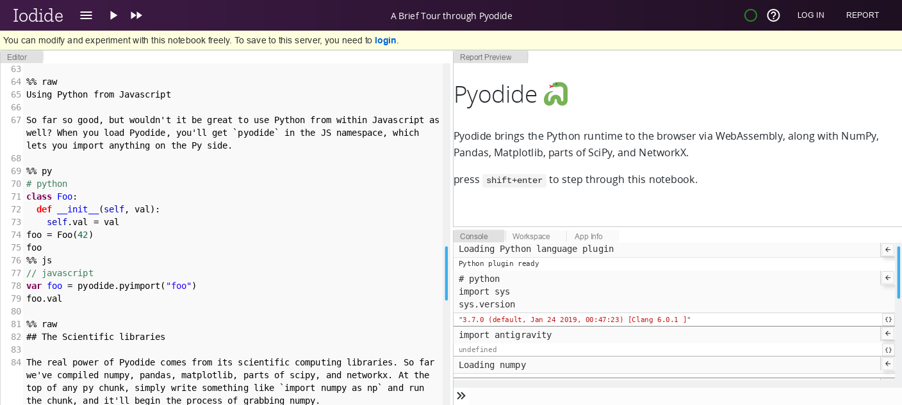
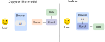
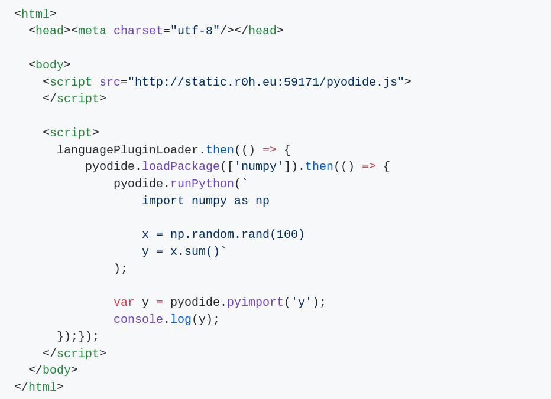
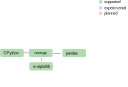
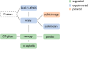
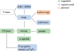
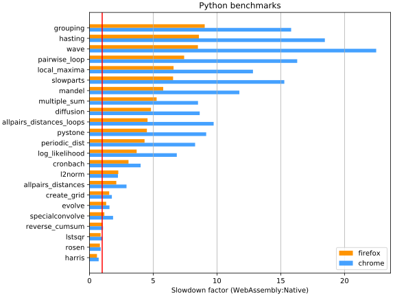
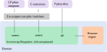
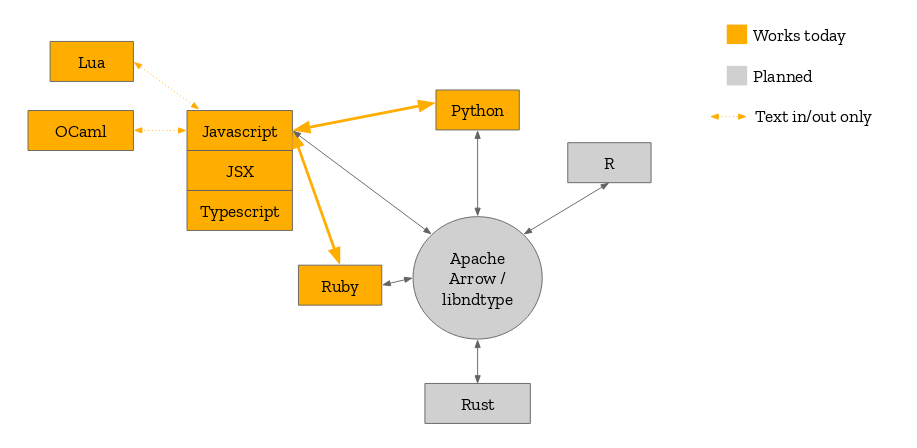

class: center, middle # Pyodide: scientific Python compiled in WebAssembly Roman Yurchak <div style="height:100px"></div> .pull-left[ *FOSDEM 2019* ] --- # Iodide <div class='left-column' style='width: 60%;'> An interactive programming environment for scientists in the browser <br /> <br /> <a href="https://iodide.io/" style='color: blue;'>iodide.io</a> </div> <div class='right-column' style='width: 25%; margin-left: 15%;'> <img src='./img/iodide_logo.png' style='width: 45%;'/> </div> .reset-column[ ] Examples <div class="iodide-examples" style='width: 100%;'> <div style='float: left; width: 29%;'> <a href="https://extremely-alpha.iodide.io/notebooks/34/?viewMode=report"> <div> <img src="./img/lorenz_attractor.gif" width="250" height="250"> </div> Lorenz Attractor </a> </div> <div style='float: left; width: 29%'> <a href="https://extremely-alpha.iodide.io/notebooks/193/?viewMode=report"> <div> <img src="./img/world_happiness.gif" width="250" height="250"> </div> World Happiness Report </a> </div> <div style='float: left; width: 29%;'> <a href="https://iodide.io/iodide-examples/eviction-notices-sf.html"> <div> <img src="./img/eviction_notices.gif" width="250" height="250"> </div> Eviction Notices in SF </a> </div> </div> --- # Iodide overview  <a href="https://iodide.io/" style='color: blue;'>iodide.io</a> --- # Architecture <p style='height: 100px'></p> .credits[ Adapted from: <span style="white-space: nowrap">jupyter.readthedocs.io/en/latest/architecture/how_jupyter_ipython_work.html#notebooks</span> ] --- # Architecture  <p style='height: 100px'></p> .credits[ Adapted from: <span style="white-space: nowrap">jupyter.readthedocs.io/en/latest/architecture/how_jupyter_ipython_work.html#notebooks</span> ] --- # Sharing of notebooks .left-column[ ### Jupyter like model **Local** Install conda, Jupyter, then project-specific dependencies **Remote** Deploy in a container (binder etc.) ] -- .right-column[ ### Iodide model **Local** Deploy to a static webserver <span style="white-space: nowrap">Just open it in your browser</span> **Remote** Share a single file containing data, report, code and dependencies Just open it in your browser ] --- # Pyodide .slide-items[ .left-column[ <p style='margin: 5px 0;'>Python scientific stack, compiled to WebAssembly</p> .small[ - created by Michael Droettboom - language plugin for Iodide ] <p style='margin: 5px 0'>CPython interpreter</p> .small[ - numpy, pandas, matplotlib ] <p style='margin: 5px 0'>WebAssembly</p> .small[ - A fast way to run compiled code in the browser ] <p style='margin: 5px 0'>Related projects</p> .small[ - PyPy.js, brython, RustPython ] .small[ [github.com/iodide-project/pyodide](https://github.com/iodide-project/pyodide/) ] ] .right-column[ ] ] --- # Pyodide example  --- # Supported packages  --- # Supported packages  --- # Supported packages  --- <h1 style='margin-bottom: 2px;'> Performance </h1> <p style='margin: 5px 0;'>  </p> .small[ <p style='margin: 0;'> Firefox: 4-8 slower for pure Python, 1-2 times slower for C-ext. Ideal scaling with the number of users. </p> ] .credits[ [github.com/iodide-project/pyodide/tree/master/benchmark](https://github.com/iodide-project/pyodide/tree/master/benchmark) ] --- # Build process  <div style='height: 30px'> </div> <div class='right-column small' style='width: 50%; '> <a href='https://emscripten.org/'>emscripten.org</a> </div> <div class='right-column' style='width: 40%; margin-left: 10%; '> <img src='./img/Emscripten_logo_full.png' style='width: 60%;'/> </div> --- # System calls For example, - ↓ `os.open` in Python - ↓ CPython: call `os_open_impl` C function -- .left-column[ **Linux** - ↓ `open` system call to `glibc` - ↓ Linux kernel ] -- .right-column[ **Emscripten / WebAssembly** - ↓ Emscripten - ↓ system call to `musl` libc - ↓ WebAssembly engine ] --- # System calls (sometimes) For example, - ↓ `os.statvfs` in Python (disk space usage) - ↓ CPython: call `os_statvfs_impl` C function .left-column[ **Linux** - ↓ `statvfs` system call to `glibc` - ↓ Linux kernel ] .right-column[ **Emscripten / WebAssembly** - ↓ Emscripten : not implemented; return "safe and sane values" - ✗ system call to `musl` libc - ✗ WebAssembly engine ] Most system calls work, but there are some edge cases. --- # What doesn't work **Difficult** - network sockets - multiprocessing - host filesystem access **Should work someday** - threads - async --- # Testing <div class='left-column' style='width: 70%;'> <p> Pytest is supported: test collection and execution in the browser </p> </div> <div class='right-column' style='width: 13%; '> <img src='img/pytest_logo.png' style='width: 100%' /> </div> -- .reset-column[ **Test suites** - CPython: 380 test files / 497 pass (increasing, but some will never pass due to WebAssembly environment) - numpy: 3145 passed, 42 failed (+ some collection failures), 47 skipped - scikit-learn: WIP, looks promising. Some remaining issues with Fortran / LAPACK calls in scipy. ] --- # Planned language interoperability  --- # Future work - increase the percentage of passing tests - dynamic linking of BLAS/LAPACK in scipy - possible in Emscripten 1.38.22 thanks to Kirill Smelkov - optimize download sizes - threading and async support - more packages <div style="height:50px"></div> Contributors welcome! --- # Application: in-browser data analytics - challenges of multi-user notebooks deployment - running notebooks on the edge with uncertain/limited connectivity - Iodide and Pyodide integrated into the OfficeJS apps store - online / offline usage, synchronization in Dropbox etc --- # Development team .left-column[ <img src='./img/mozilla-logo-bw-rgb.png' style='width: 70%; margin: 30px 10px;'/> Brendan Colloran <br /> Hamilton Ulmer <br /> William Lachance <br /> Michael Droettboom <br /> Teon Brooks <br /> ... ] .right-column[ ] --- class: center, middle <h3>Thank you!</h3> <h3>Questions?</h3> <div style="height:120px"></div> .pull-left[ <a href="https://github.com/iodide-project/pyodide" style="white-space: nowrap">github.com/iodide-project/pyodide</a> ] .pull-right[ @RomanYurchak ]